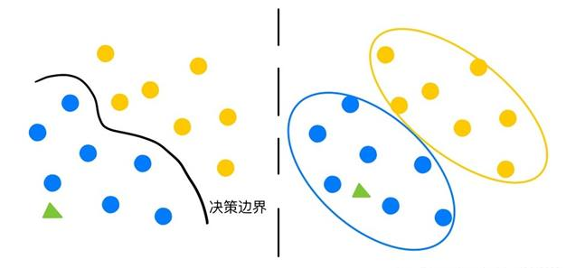
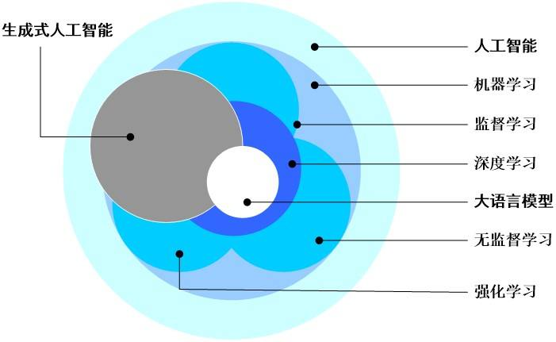
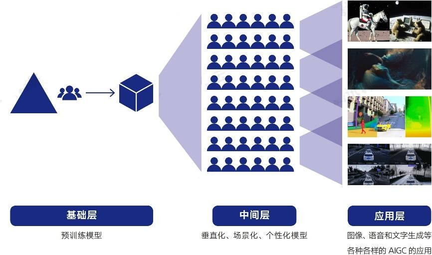
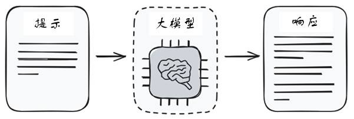
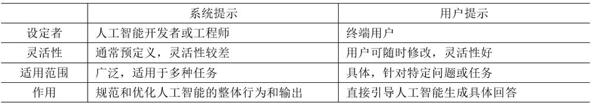
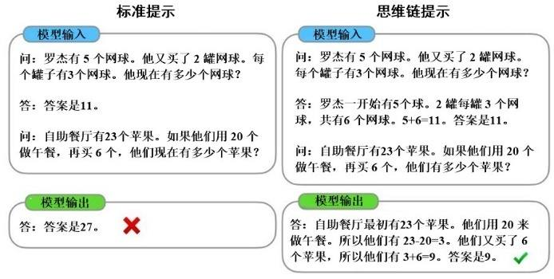
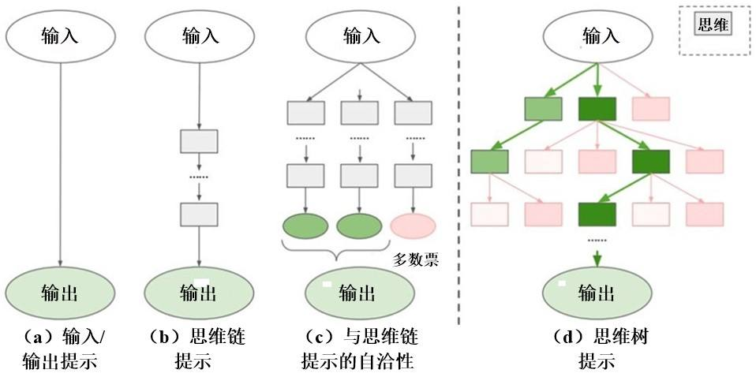

第 1 页 · 数智人才培养

数智人才培养
AI通识精品系列
周苏 教授 QQ：81505050
人工智能通识教程

第 2 页 · 第9章
第9章
周苏 教授 QQ：81505050
生成式人工智能技术


第 3 页 · 生成式人工智能是指能够创建新数据或内容的系统，如文本、图像和音乐，它通过学习大量现有数据中的模式来生成与训练数据风格相似
生成式人工智能是指能够创建新数据或内容的系统，如文本、图像和音乐，它通过学习大量现有数据中的模式来生成与训练数据风格相似但内容独特的新实例。这类系统通常基于深度学习模型，尤其是Transformer（变换器）架构，利用自注意力机制捕捉复杂的结构和依赖关系。提示工程则是指设计特定的输入（即提示），以引导生成式人工智能产生期望的输出，通过精心构造的提示，用户可以更精确地控制人工智能生成的内容，从而提高结果的相关性和质量。这两者的结合极大地扩展了人工智能在创意产业、内容生成及个性化服务等领域的应用潜力。
第9章 生成式人工智能技术
第 4 页 · 生成式人工智能与人工智能生成内容（AIGC）这两个概念紧密相关， AIGC是生成式人工智能的一个具体应用方向。生成式人工
生成式人工智能与人工智能生成内容（AIGC）这两个概念紧密相关， AIGC是生成式人工智能的一个具体应用方向。生成式人工智能的核心能力在于创造、预测、转换和补全信息。而AIGC则更侧重于描述由生成式人工智能技术所产出的实际成果，即由人工智能系统自动生成、具体创造出来的作品内容本身，包括简单的文本创作、图像合成以及复杂的音乐生成、视频剪辑等，这些作品展现了人工智能在创意表达方面的潜能。
第9章 生成式人工智能技术
第 5 页 · 因此，生成式人工智能是底层的技术框架和方法，而AIGC是这些技术应用的结果，体现了技术在实际场景中的应用价值和社会影响。
因此，生成式人工智能是底层的技术框架和方法，而AIGC是这些技术应用的结果，体现了技术在实际场景中的应用价值和社会影响。两者之间存在一种从技术到产品的逻辑联系，生成式人工智能的发展推动了AIGC的多样化和普及化。
第9章 生成式人工智能技术
第 6 页 · 01

01
生成式
人工智能
02
生成式
人工智能
应用场景
03
提示工程
的定义
04
提示工程
原理
目录 / CONTENTS
05
提示工程
技术
06
大语言模型
的幻觉
第 7 页 · PART 01
PART 01
生成式人工智能
第 8 页 · 近年来，生成式人工智能（AIGC）技术备受社会瞩目，它利用深度学习和大数据等技术，能够自主生成全新的、具有创新性的内容。
近年来，生成式人工智能（AIGC）技术备受社会瞩目，它利用深度学习和大数据等技术，能够自主生成全新的、具有创新性的内容。这些新数据或内容与训练数据具有相似的特征但并非完全相同，可以是文本、图像、音频等形式。
9.1 生成式人工智能
第 9 页 · 早先的判别式人工智能是一种专注于学习输入数据与输出标签之间映射关系的人工智能方法，它主要关注如何从给定的输入中准确地预测
早先的判别式人工智能是一种专注于学习输入数据与输出标签之间映射关系的人工智能方法，它主要关注如何从给定的输入中准确地预测或分类输出，而不试图理解生成这些数据的底层概率分布。判别式模型直接学习从特征到类别的决策边界，因此它们在许多实际应用中表现出色，尤其是在需要高精度和快速响应的任务上，因其高效性和准确性在众多应用场景中占据重要地位。然而，随着技术的发展，人们在探索如何结合生成式模型的优势，开发出更加全面和强大的人工智能系统。
9.1 生成式人工智能
第 10 页 · 定义：生成式人工智能是一种基于机器学习的方法，它通过学习大量数据，能够生成与原始数据相似的全新内容。这种技术可以应用于自
定义：生成式人工智能是一种基于机器学习的方法，它通过学习大量数据，能够生成与原始数据相似的全新内容。这种技术可以应用于自然语言处理、图像生成、音频合成等多个领域。
9.1.1 什么是生成式人工智能
第 11 页 · 如图9-1所示，判别模型需要求出一条决策边界，而生成模型需要计算联合概率分布。
如图9-1所示，判别模型需要求出一条决策边界，而生成模型需要计算联合概率分布。
图9-1 判别模型（左）与生成模型
9.1.1 什么是生成式人工智能

第 12 页 · 与传统的判别式人工智能相比，生成式人工智能更注重于创造和生成，而非简单的分类和识别，它专注于学习现有数据集的模式并基于这
与传统的判别式人工智能相比，生成式人工智能更注重于创造和生成，而非简单的分类和识别，它专注于学习现有数据集的模式并基于这些模式创造新的、之前未存在的内容。这种技术使得机器能够模仿创造性过程，生成包括文本、图像、音频和视频等的各种类型的内容。生成式模型通过深度学习网络，如变分自编码器（VAEs）、生成对抗网络（GANs）或Transformer模型（如ChatGPT）等来实现这一目标。
9.1.1 什么是生成式人工智能
第 13 页 · 生成式人工智能的主要应用场景如下。
生成式人工智能的主要应用场景如下。
（1）文本生成：可以生成各种类型的文本，如新闻报道、小说、诗歌等。这种技术可以大大提高文本创作的效率和质量，为内容创作者提供更多的灵感和选择。
（2）图像生成：能够根据用户的描述或输入的关键词，生成符合要求的图像。这种技术在设计、艺术等领域具有广泛的应用前景。
（3）音频合成：可以模拟各种声音，生成逼真的语音、音乐等音频内容。这对于语音助手、音乐创作等领域具有重要意义。
9.1.1 什么是生成式人工智能
第 14 页 · 生成式人工智能的未来发展趋势包括：
生成式人工智能的未来发展趋势包括：
（1）技术创新：随着深度学习、强化学习等技术的不断发展，生成式人工智能的性能将得到进一步提升。
（2）应用拓展：生成式人工智能将在更多领域得到应用，如VR/AR、自动驾驶等，这些应用将进一步提升生成式人工智能的实用价值和社会影响力。
（3）伦理挑战：随着生成式人工智能的普及，我们也需要关注其可能带来的伦理挑战。例如如何确保生成的内容符合道德和法律要求，如何保护原创作品的权益等。
9.1.1 什么是生成式人工智能
第 15 页 · 作为一种新兴的技术领域，生成式人工智能带来了许多创新和机遇，具有广阔的应用前景和巨大的发展潜力。但是，生成式人工智能也存
作为一种新兴的技术领域，生成式人工智能带来了许多创新和机遇，具有广阔的应用前景和巨大的发展潜力。但是，生成式人工智能也存在一些潜在的风险和挑战，因此，需要在推进生成式人工智能应用的同时，不断创新和完善生成式人工智能技术，加强风险管理和监管，推动其健康、可持续的发展。
首先，对于生成式人工智能生成的内容需要建立有效的审核机制，确保其内容符合法律法规和道德标准。同时，也需要加强对原创作品的保护，防止侵权行为的发生。
9.1.1 什么是生成式人工智能
第 16 页 · 其次，需要关注生成式人工智能的滥用问题。例如，一些人可能会利用生成式人工智能生成虚假信息或进行恶意攻击。因此，需要加强技
其次，需要关注生成式人工智能的滥用问题。例如，一些人可能会利用生成式人工智能生成虚假信息或进行恶意攻击。因此，需要加强技术监管和法律制约，防止生成式人工智能被用于非法活动。
最后，需要加强公众对生成式人工智能的认知和了解。通过普及相关知识，提高公众的辨识能力和风险意识，可以更好地应对生成式人工智能带来的挑战和风险。通过深入了解生成式人工智能的基本概念、应用场景以及未来发展趋势，我们可以更好地把握这一技术的发展脉搏，为未来的创新和发展提供有力支持。
9.1.1 什么是生成式人工智能
第 17 页 · 定义：AIGC（人工智能生成内容）是指利用人工智能技术，特别是机器学习、深度学习等方法，自动生成各种形式的内容，如文本、
定义：AIGC（人工智能生成内容）是指利用人工智能技术，特别是机器学习、深度学习等方法，自动生成各种形式的内容，如文本、图像、音频、视频等。这些内容可以是创意性的，比如艺术作品、音乐、文章；也可以是实用性的，比如新闻报道、产品描述、个性化推荐信息等。AIGC的核心优势在于能够基于大量的数据学习模式，自动创作新的内容，这在很大程度上提高了内容生产的效率和个性化程度。
9.1.2 定义AIGC
第 18 页 · （1）用户生成内容（UGC）：是指由用户自发创建并分享的各类内容，如评论、博客文章、视频、图片等，通常通过社交媒体平台、
（1）用户生成内容（UGC）：是指由用户自发创建并分享的各类内容，如评论、博客文章、视频、图片等，通常通过社交媒体平台、论坛和在线社区进行传播。
（2）专业生成内容（PGC）：是指由具有特定专业知识或技能的个人、团体或机构创建的内容，如新闻报道、学术论文、行业分析报告等，旨在提供高质量、权威性和深度的信息。
9.1.2 定义AIGC
第 19 页 · AIGC代表了人工智能在创意生产和内容生成领域的应用，能够自动化或半自动化地生产高质量、个性化的内容。应用AGIC的关键
AIGC代表了人工智能在创意生产和内容生成领域的应用，能够自动化或半自动化地生产高质量、个性化的内容。应用AGIC的关键步骤一般包括：数据收集、模型训练、内容生成和后期优化。通过这些过程，人工智能系统能够理解特定主题、风格或用户偏好，进而生成符合要求的内容。
9.1.2 定义AIGC
第 20 页 · 从用户生成内容到专业生成内容，再到现在的AIGC，我们看到了内容创作方式的巨大变革和进步。通过深度学习与自然语言处理的创
从用户生成内容到专业生成内容，再到现在的AIGC，我们看到了内容创作方式的巨大变革和进步。通过深度学习与自然语言处理的创新融合，AIGC拥有无限的创造力。利用人工智能的理解力、想象力和创作力，根据指定的需求和风格，创作出各种内容。诸如ChatGPT、通义千问等智能系统，AIGC的出现打开了一个全新的创作世界，为人们提供了无数的可能性，重塑了信息时代的内容创作生态，甚至让人难以分清背后的创作者到底是人类还是人工智能。
9.1.2 定义AIGC
第 21 页 · 与AIGC相关的人工智能领域术语之间的关系如下图所示，它们共同构成了AIGC的核心要素。

与AIGC相关的人工智能领域术语之间的关系如下图所示，它们共同构成了AIGC的核心要素。
图9-2 AIGC与人工智能技术谱系
9.1.2 定义AIGC
第 22 页 · PART 02
PART 02
生成式人工智能应用场景
第 23 页 · AIGC技术具有强大的创造性和自动化能力，其应用场景广泛且多样，覆盖了多个行业和领域，它的产业生态体系的三层架构如下图所
AIGC技术具有强大的创造性和自动化能力，其应用场景广泛且多样，覆盖了多个行业和领域，它的产业生态体系的三层架构如下图所示，它的典型应用场景大致可以分为文本生成、图
像生成、音频生成、视频生成、多
模态生成等5个方面。
图9-3 AIGC产业生态体系的
三层架构
9.2 生成式人工智能应用场景

第 24 页 · 其典型应用场景如下。
其典型应用场景如下。
（1）文字生成：根据使用场景，基于NLP的文本内容生成可分为非交互式与交互式文本生成。非交互式文本生成包括摘要/标题生成、文本风格迁移、文章生成、图像生成文本等。交互式文本生成主要包括聊天机器人、文本交互游戏等。AIGC能够根据特定主题或情境生成文章、故事、新闻报道、诗歌等文本内容，提高内容创造的效率和多样性，例如使用ChatGPT等工具进行自动文案撰写。
9.2 生成式人工智能应用场景
第 25 页 · （2）音频生成：在音乐和音频制作领域的相关技术较为成熟。AIGC可以生成音乐作品、音效、播客内容，用于音乐创作软件和自动
（2）音频生成：在音乐和音频制作领域的相关技术较为成熟。AIGC可以生成音乐作品、音效、播客内容，用于音乐创作软件和自动配音工具，甚至合成逼真的人声，如语音克隆，将人声1替换为人声2。还可应用于文本生成特定场景语音，如数字人播报、语音客服等。此外，可基于文本描述、图片内容理解生成场景化音频、乐曲等。
9.2 生成式人工智能应用场景
第 26 页 · （3）图像生成：绘画创作，生成各种风格的艺术作品、插图、设计图样，如通过Stable Diffusion、Midjour
（3）图像生成：绘画创作，生成各种风格的艺术作品、插图、设计图样，如通过Stable Diffusion、Midjourney等工具创作独一无二的视觉艺术。根据使用场景，可分为图像编辑修改与图像自主生成。图像编辑修改可应用于图像超分、图像修复、人脸替换、图像去水印、图像背景去除等。图像自主生成包括端到端的生成，如真实图像生成卡通图像、参照图像生成绘画图像、真实图像生成素描图像、文本生成图像等。
9.2 生成式人工智能应用场景
第 27 页 · （4）视频生成：它与图像生成在原理上相似，主要分为视频编辑与视频自主生成。视频编辑可应用于视频超分（视频画质增强）、视频
（4）视频生成：它与图像生成在原理上相似，主要分为视频编辑与视频自主生成。视频编辑可应用于视频超分（视频画质增强）、视频修复（老电影上色、画质修复）、视频画面剪辑（识别画面内容，自动场景剪辑）。视频自主生成可应用于图像生成视频（给定参照图像，生成一段运动视频）、文本生成视频（给定一段描述性文字，生成内容相符视频）。能够自动生成短视频、广告、电影预告片等内容，包括剪辑、特效应用、智能编排，以及根据剧本生成动态画面。
9.2 生成式人工智能应用场景
第 28 页 · （5）代码生成：根据功能描述自动生成或优化编程代码，帮助开发者提高工作效率，减少错误，加速软件开发流程。
（5）代码生成：根据功能描述自动生成或优化编程代码，帮助开发者提高工作效率，减少错误，加速软件开发流程。
（6）游戏开发：在游戏产业中，AIGC可用于角色设计、场景生成、游戏测试，以及增强NPC（非玩家控制角色）的交互智能化，提升游戏体验和开发效率。
（7）金融行业：应用于风险评估、交易策略制定、投资决策支持、个性化金融服务推荐、智能客服等领域，同时需注意数据安全和隐私保护。
9.2 生成式人工智能应用场景
第 29 页 · （8）医疗健康：在疾病预测、辅助诊断、个性化治疗方案推荐、药物发现与研发等方面发挥作用，通过学习医疗大数据提供更精准的医
（8）医疗健康：在疾病预测、辅助诊断、个性化治疗方案推荐、药物发现与研发等方面发挥作用，通过学习医疗大数据提供更精准的医疗服务。
（9）电商零售：实现个性化商品推荐、智能客服、基于用户行为的广告投放、物流优化等，以提升顾客体验和销售效率。
（10）社交网络：开发聊天机器人、语音识别、内容审核、情绪分析等功能，优化用户交流体验，提高平台内容质量和安全性。
（11）教育与培训：生成定制化学习材料、智能辅导、课程内容创作，以及交互式学习体验的设计，以适应不同学习者的需求。
9.2 生成式人工智能应用场景
第 30 页 · 这些应用场景展示了AIGC技术在促进内容创作、提高工作效率、增强用户体验等方面的巨大潜力。如今，AIGC的工具大量涌现，
这些应用场景展示了AIGC技术在促进内容创作、提高工作效率、增强用户体验等方面的巨大潜力。如今，AIGC的工具大量涌现，种类繁多，涵盖了文本、图像、音频、视频等多个领域。一些常用的AIGC工具在各自的领域内因创新性和实用性而受到欢迎，这些工具持续推动着内容创作的边界。选择合适自己的工具，可以极大地提高创作效率和创新能力。不过，值得注意的是，由于技术快速发展，新的工具和服务不断涌现，建议对技术发展动态的关注。
9.2 生成式人工智能应用场景
第 31 页 · PART 03
PART 03
提示工程的定义
第 32 页 · 大语言模型（LLM）正在发展成为像水、电一样的人工智能基础设施。像预训练LLM这种艰巨任务通常只会有少数技术实力强、财力
大语言模型（LLM）正在发展成为像水、电一样的人工智能基础设施。像预训练LLM这种艰巨任务通常只会有少数技术实力强、财力雄厚的公司去做，而大多数人则会是其用户。对一般用户来说，掌握用好LLM的技术更加重要。人们已经运用各种技术来从这些LLM系统中提取所需的输出，其中的一些方法会改变模型的行为来更好地贴近我们的期望，而另一些方法则侧重于增强我们查询LLM的方式，以提取更精确和更有关联的信息。提示、微调和检索增强生成等技术是其中应用最广泛的。
9.3 提示工程的定义
第 33 页 · 是选择提示工程、微调工程还是检索增强生成方法，取决于应用项目的具体要求、可用资源和期望的结果。每种方法都有其独特的优势和
是选择提示工程、微调工程还是检索增强生成方法，取决于应用项目的具体要求、可用资源和期望的结果。每种方法都有其独特的优势和局限性。提示是易用且经济高效的，但提供的定制能力较少。微调以更高的成本和复杂性提供充分的可定制性。检索增强生成实现了某种平衡，提供最新且与特定领域相关的信息，复杂度适中。
9.3 提示工程的定义
第 34 页 · 本质上，提示是指向LLM提供输入的方法，是与任何LLM交互的基本方式。用户可以把提示看作是给模型提供的指令。当你使用提示
本质上，提示是指向LLM提供输入的方法，是与任何LLM交互的基本方式。用户可以把提示看作是给模型提供的指令。当你使用提示时，会告诉模型你希望它给反馈什么样的信息。这种方法有点像是学习如何提出正确的问题以获得最佳答案的方法。但是，用户能从中获得的东西是有限的，这是因为模型只能反馈它从训练中获知的内容。
图9-4 提示是基本交互方式
9.3 提示工程的定义

第 35 页 · “提示工程”是促使LLM取得更好结果的艺术和科学。作为一种策略，LLM关注提示词的开发和优化，用于引导LLM生成高质量、
“提示工程”是促使LLM取得更好结果的艺术和科学。作为一种策略，LLM关注提示词的开发和优化，用于引导LLM生成高质量、符合预期的输出，帮助用户将语言模型用于各种应用场景和研究领域。掌握提示工程相关技能帮助用户更好地了解LLM的能力和局限性。研究人员可利用提示工程来提高LLM处理复杂任务场景的能力，如问答和算术推理能力以及LLM的安全性。
9.3 提示工程的定义
第 36 页 · 开发人员可通过提示工程设计和实现与LLM或其他生态工具的交互和高效接轨，借助专业领域知识和外部工具来增强LLM的能力。随
开发人员可通过提示工程设计和实现与LLM或其他生态工具的交互和高效接轨，借助专业领域知识和外部工具来增强LLM的能力。随着LLM参数量的剧增和功能的日益强大，如何有效地与这些模型交互以获取有用的信息或创造性的内容变得尤为重要。
9.3 提示工程的定义
第 37 页 · （1）设计有效提示：这是指构造问题或指令的方式，目的是最大化模型的响应质量。这包括选择合适的词汇、句式结构，甚至创造上下
（1）设计有效提示：这是指构造问题或指令的方式，目的是最大化模型的响应质量。这包括选择合适的词汇、句式结构，甚至创造上下文环境，以激发模型展示其最佳性能。比如，通过构建问题-回答对，精心设计的提示可以引导模型输出特定类型的内容，如创意写作、代码编写、专业建议等。
（2）领域知识嵌入：为了提高模型在特定领域的表现，提示工程可能会融入该领域的专业知识。这有助于模型更好地理解和生成与该领域相关的高质量内容，如在化学、生物学或法律等专业领域。
9.3 提示工程的定义
第 38 页 · （3）提示优化与迭代：通过不同的提示策略，评估模型输出的质量，并据此调整提示，以达到最优效果。这可能包括A/B测试、迭代
（3）提示优化与迭代：通过不同的提示策略，评估模型输出的质量，并据此调整提示，以达到最优效果。这可能包括A/B测试、迭代改进以及使用自动化工具来寻找最有效的提示形式。
（4）减少偏见与提高一致性：由于LLM也可能承载了训练数据中的偏见，提示工程也致力于设计减少偏见的提示，以及确保模型输出的一致性和可预测性。这可能涉及制定公平性原则，以及使用特定的提示来测试和校正模型的偏见。
9.3 提示工程的定义
第 39 页 · （5）利用提示模板和示例：开发一套提示模板和示例，可以作为引导模型输出的起点。这些模板可以根据不同的应用场景进行定制，帮
（5）利用提示模板和示例：开发一套提示模板和示例，可以作为引导模型输出的起点。这些模板可以根据不同的应用场景进行定制，帮助用户快速上手并获得期望的结果。
（6）模型交互的界面设计：为了让非技术人员也能高效使用LLM，提示工程还包括设计直观易用的用户界面，让用户能够轻松输入提示、调整设置并查看模型的响应。
9.3 提示工程的定义
第 40 页 · PART 04
PART 04
提示工程原理
第 41 页 · 大语言模型通过运用大量的文本数据进行训练，学习语言的结构和模式。例如大语言模型GPT通过对海量数据的分析，学会了如何在不
大语言模型通过运用大量的文本数据进行训练，学习语言的结构和模式。例如大语言模型GPT通过对海量数据的分析，学会了如何在不同语境下生成连贯和有意义的文本。用户在使用大语言模型时，系统依赖于提示词提供的上下文信息。这意味着，提示词越清晰、越具体，系统越能理解你的意图。
9.4 提示工程原理
第 42 页 · 当用户输入提示词后，大系统会通过以下步骤生成回答：
当用户输入提示词后，大系统会通过以下步骤生成回答：
（1）解析提示词：首先解析输入的提示词，提取关键词和语境。
（2）检索知识库：根据解析结果，从训练数据中检索相关信息。
（3）生成文本：结合上下文和检索到的信息，生成连贯的回答。
9.4 提示工程原理
第 43 页 · 每一步都依赖提示词的质量。如果提示词模糊或缺乏具体性，则人工智能的解析和检索过程就会受到影响，最终生成的回答也可能不尽如
每一步都依赖提示词的质量。如果提示词模糊或缺乏具体性，则人工智能的解析和检索过程就会受到影响，最终生成的回答也可能不尽如人意。提示是用户与人工智能模型交互的桥梁，更是一种全新的“编程语言”。与传统的编程语言相比，提示通常更加即时和互动。用户可以直接在人工智能模型的接口中输入提示并立即看到结果，而无需经过编译或长时间的运行过程。用户通过精心设计的提示来指导人工智能模型产生特定的输出，执行各种任务。
9.4 提示工程原理
第 44 页 · 提示任务的范围非常广泛，从简单问答、文本生成到复杂的逻辑推理、数学计算和创意写作等。作为生成式人工智能时代的“软件工程”
提示任务的范围非常广泛，从简单问答、文本生成到复杂的逻辑推理、数学计算和创意写作等。作为生成式人工智能时代的“软件工程”，提示工程涉及到如何设计、优化和管理提示内容，以确保人工智能模型能够准确、高效地执行用户的指令。
图9-5 提示工程的内容
9.4 提示工程原理
第 45 页 · （1）设计：提示设计需要仔细选择词汇、构造清晰的句子结构，并考虑上下文信息，确保人工智能模型能够准确理解用户的意图并产生
（1）设计：提示设计需要仔细选择词汇、构造清晰的句子结构，并考虑上下文信息，确保人工智能模型能够准确理解用户的意图并产生符合预期的输出。
（2）优化：优化提示可能涉及调整词汇选择、改变句子结构或添加额外的上下文信息，以提高人工智能模型的性能和准确性。这可能需要多次尝试和迭代，以达到最佳效果。
9.4 提示工程原理
第 46 页 · （3）管理：随着AGI应用的不断增长和复杂化，管理大量的提示内容变得至关重要。这包括组织、存储和检索提示，以便在需要时能
（3）管理：随着AGI应用的不断增长和复杂化，管理大量的提示内容变得至关重要。这包括组织、存储和检索提示，以便在需要时能够快速找到并使用它们。同时，还需要定期更新和维护这些提示，以适应人工智能模型的改进和变化的需求。
9.4 提示工程原理
第 47 页 · 提示词是用户输入的指令或问题，用来引导人工智能生成相应的回答。提示词分为系统提示和用户提示两大类（见下表），理解两者的区
提示词是用户输入的指令或问题，用来引导人工智能生成相应的回答。提示词分为系统提示和用户提示两大类（见下表），理解两者的区别有助于有效地引导人工智能生成所需的回答。
表9-1 系统提示和用户提示
9.4.1 提示词分类

第 48 页 · （1）系统提示：这是人工智能模型内部使用的提示，通常用于指导模型如何执行特定任务。这种系统提示可以确保人工智能在不同用户
（1）系统提示：这是人工智能模型内部使用的提示，通常用于指导模型如何执行特定任务。这种系统提示可以确保人工智能在不同用户交互中保持一致的语气和结构，提升用户体验。这些提示通常由人工智能开发者或工程师预先设计，用来规范和优化人工智能的工作方式。
（2）用户提示：是由终端用户输入的具体指令或问题，用来引导人工智能生成特定的回答。通过用户提示，用户可以精准地控制人工智能的输出，使其更符合个人需求和特定情境。用户提示的灵活性和多样性使得它们能够针对具体需求进行定制。
9.4.1 提示词分类
第 49 页 · 一个完整的提示应该包含清晰的指示、相关上下文、有助于理解的例子、明确的输入以及期望的输出格式描述。
一个完整的提示应该包含清晰的指示、相关上下文、有助于理解的例子、明确的输入以及期望的输出格式描述。
（1）指示：是对任务的明确描述，相当于给模型下达了一个命令或请求，它告诉模型应该做什么，是任务执行的基础。
（2）上下文：是与任务相关的背景信息，它有助于模型更好地理解当前任务所处的环境或情境。在多轮交互中，上下文尤其重要，因为它提供了对话的连贯性和历史信息。
9.4.2 提示构成
第 50 页 · （3）示例：给出一个或多个具体示例，用于演示任务的执行方式或所需输出的格式。这种方法在机器学习中被称为示范学习，已被证明
（3）示例：给出一个或多个具体示例，用于演示任务的执行方式或所需输出的格式。这种方法在机器学习中被称为示范学习，已被证明对提高输出正确性有帮助。
（4）输入：是任务的具体数据或信息，它是模型需要处理的内容。在提示中，输入应该被清晰地标识出来，以便模型能够准确地识别和处理。
（5）输出格式：是模型根据输入和指示生成的结果。提示中通常会描述输出格式，以便后续模块能够自动解析模型的输出结果。常见的输出格式包括结构化数据格式如JSON、XML等。
9.4.2 提示构成
第 51 页 · 提示调优是一个人与机器协同的过程，需明确需求、注重细节、灵活应用技巧，以实现最佳交互效果。
提示调优是一个人与机器协同的过程，需明确需求、注重细节、灵活应用技巧，以实现最佳交互效果。
（1）人的视角：明确需求。它确保清晰、具体地传达自己的意图。策略是简化复杂需求，分解为模型易理解的指令。
（2）机器的视角：注重细节。机器缺乏人类直觉，需详细提供信息和上下文。策略是精确选择词汇和结构，避免歧义，提供完整线索。
（3）模型的视角：灵活应用技巧。不同模型、情境需要有不同的提示表达方式。策略是通过实践找到最佳词汇、结构和技巧，适应模型特性。
9.4.3 提示调优
第 52 页 · PART 05
PART 05
提示工程技术
第 53 页 · 一个好的提示词应该能够帮助使用者明确人工智能的任务、提供必要的背景信息、限定回答的范围和深度，其中应该遵循的原则如下。
一个好的提示词应该能够帮助使用者明确人工智能的任务、提供必要的背景信息、限定回答的范围和深度，其中应该遵循的原则如下。
（1）明确性：提示词应清晰明确，避免模糊不清的问题。
（2）简洁性：尽量保持提示词简洁明了，避免过于复杂的句子结构。
（3）具体性：提供具体的背景信息和期望的回答方向，减少歧义。
（4）连贯性：在多轮对话中，提示词应保持前后一致，确保对话连贯性。
9.5 提示工程技术
第 54 页 · 提示输入通常是一组描述如何执行所需任务的指令。例如，要使用 ChatGPT 根据职位描述起草求职信，可以使用以下提示：
提示输入通常是一组描述如何执行所需任务的指令。例如，要使用 ChatGPT 根据职位描述起草求职信，可以使用以下提示：
“您是一位申请以下职位的申请人。写一封求职信，解释为什么您非常适合该职位。”
这看上去很容易，但研究人员发现，LLM提供的结果在很大程度上取决于给出的具体提示。所以，虽然解释清楚一项任务（例如写求职信）似乎很简单，但简单的调整（例如措辞和格式）变化会极大影响用户收到的模型输出。
9.5 提示工程技术
第 55 页 · 提示工程从根本上来说是不断做实验改变提示内容，以了解提示的变化对模型生成内容的影响，因此不需要高级的技术背景，而只需一点
提示工程从根本上来说是不断做实验改变提示内容，以了解提示的变化对模型生成内容的影响，因此不需要高级的技术背景，而只需一点好奇心和创造力即可。此外，每个使用LLM的用户都可以而且应当成为一名提示工程师。最基本的原因是，提示工程将为LLM的输出带来更好的结果，即使只使用了一些基本技术，也可以显著提高许多常见任务的性能。
由于提示工程的效果很大程度上取决于模型的原始学习水平，所以它可能并不总能提供你需要的最新或最具体的信息。当你处理的是一般性的主题，或当你只需要一个快速答案，而不需要太多细节时，提示工程最好用。
9.5 提示工程技术
第 56 页 · 链式思考提示（CoT，又称思维链提示）是一种注重和引导逐步推理的方法。通过将多步骤问题分解为若干中间步骤，构建一系列有序
链式思考提示（CoT，又称思维链提示）是一种注重和引导逐步推理的方法。通过将多步骤问题分解为若干中间步骤，构建一系列有序、相互关联的思考步骤，使模型能够更深入地理解问题，并生成结构化、逻辑清晰的回答，使LLM能够解决零样本或少样本提示
无法解决的复杂推理任务。
图9-6 链式思考提示示例
9.5.1 链式思考提示

第 57 页 · 链式思考提示的特点是：
链式思考提示的特点是：
（1）有序性：要求将问题分解为一系列有序的步骤，每个步骤都建立在前一个步骤的基础上，形成一条清晰的思考链条。
（2）关联性：每个思考步骤之间必须存在紧密的逻辑联系，以确保整个思考过程的连贯性和一致性。
（3）逐步推理：模型在每个步骤中只关注当前的问题和相关信息，通过逐步推理的方式逐步逼近最终答案。
9.5.1 链式思考提示
第 58 页 · 所谓“零样本提示”是指通过提示向LLM授予一项任务，而该模型之前未曾见过该任务的数据。即使没有任何示例，LLM也能够通过
所谓“零样本提示”是指通过提示向LLM授予一项任务，而该模型之前未曾见过该任务的数据。即使没有任何示例，LLM也能够通过简单的提示正确执行多步骤推理任务，而这是通过少样本提示方法无法做到的。CoT提示法对于多步骤推理问题、受益于中间解释的任务或只用简单的标准提示技术不足以完成的任务来说是一种有用的技术。
9.5.1 链式思考提示
第 59 页 · 生成知识提示是一种强调知识生成的方法，通过构建特定的提示语句，引导模型从已有知识库中提取、整合并生成新的知识或信息内容。
生成知识提示是一种强调知识生成的方法，通过构建特定的提示语句，引导模型从已有知识库中提取、整合并生成新的知识或信息内容。其特点是：
（1）创新性：旨在产生新的、原创性的知识内容，而非简单地复述或重组已有信息。
（2）引导性：通过精心设计的提示语句，模型被引导去探索、发现并与已有知识进行交互，从而生成新的见解或信息。
（3）知识整合：该过程涉及对多个来源、多种类型的知识进行融合和整合，以形成更全面、深入的理解。
9.5.2 生成知识提示
第 60 页 · 考虑一个想要使用LLM来完成的任务：按内容中表达的情绪来分类客户评论。当LLM通过提示接受一项任务时，如果模型以前没有见
考虑一个想要使用LLM来完成的任务：按内容中表达的情绪来分类客户评论。当LLM通过提示接受一项任务时，如果模型以前没有见过该任务的数据，这就被称为零样本提示。这个案例中的任务将是零样本分类任务，其中用户向LLM发出对电影评论进行分类的说明。
不过，在针对文本的各种语言任务中，我们几乎总能通过一些示例，或者说“少样本提示”来提高性能。在这个案例中，少样本提示方法一开始的做法可能是一样的，但会附加几个期望的输出示例。针对文本的语言任务，通过一些示例可以提高性能，这被称为少样本提示。
9.5.3 少样本提示
第 61 页 · 事实上，提供示例可以显著提高模型完成任务的能力。与其他机器学习模型不同，LLM能够执行它们尚未训练过的各种任务。但每种方
事实上，提供示例可以显著提高模型完成任务的能力。与其他机器学习模型不同，LLM能够执行它们尚未训练过的各种任务。但每种方法都有其自身的局限性。虽然少样本提示对于许多任务来说是一种有效的技术，但在解决更复杂的推理任务时，它往往会力不从心。
9.5.3 少样本提示
第 62 页 · 自一致提示是一种由谷歌研究人员引入的建立在CoT基础上的提示技术，这种方法旨在为LLM提供多种推理路径，然后在生成的响应
自一致提示是一种由谷歌研究人员引入的建立在CoT基础上的提示技术，这种方法旨在为LLM提供多种推理路径，然后在生成的响应中选择最一致的答案。与CoT结合使用时，自一致提示方法会更强大，并可提高复杂推理任务的性能。
9.5.4 自一致提示
第 63 页 · 自一致提示方法的三个步骤是：
自一致提示方法的三个步骤是：
（1）使用CoT提示语言模型，
（2）从语言模型中采样一组不同的推理路径，
（3）边缘化推理路径以聚合最终答案，并选择最一致的答案。
例如来看一个分析电子邮件的示例。假设一家软件咨询公司每天收到数百封电子邮件，但通常大多数都是促销内容或垃圾邮件。他们希望将电子邮件分类为重要或不重要两类。
9.5.4 自一致提示
第 64 页 · 您好！
您好！
我相信这封电子邮件会让您感到满意。我们目前正面临严峻挑战，鉴于您在软件工程方面的成功记录，相信您的专业知识可以提供宝贵见解和建议以有助于解决此问题。
能否在您方便的时候尽早安排一次会议，来讨论细节并探讨我们如何合作应对这一挑战？
非常感谢您对此事的及时关注。
此致，
赵大刚
9.5.4 自一致提示
第 65 页 · 现在，将此电子邮件放入提示中，并要求LLM“将上述电子邮件分类为重要或不重要，因为它与软件咨询公司相关。让我们一步一步思
现在，将此电子邮件放入提示中，并要求LLM“将上述电子邮件分类为重要或不重要，因为它与软件咨询公司相关。让我们一步一步思考。”然后，可以使用这个提示来生成多个响应，从中选择最一致的响应。
9.5.4 自一致提示
第 66 页 · 响应：电子邮件明确提到组织内部面临严峻挑战，这表明了此事的重要性。我会将这封电子邮件归类为“重要”。
响应：电子邮件明确提到组织内部面临严峻挑战，这表明了此事的重要性。我会将这封电子邮件归类为“重要”。
响应：电子邮件提到组织内部面临严峻挑战，但他们没有描述问题或挑战。我会将这封电子邮件归类为“不重要”。
响应：虽然没有明确说明，但电子邮件的语气和要求立即关注的请求表明了一种紧迫感，强调了及时回应的重要性。我会将这封电子邮件归类为“重要”。
9.5.4 自一致提示
第 67 页 · 通过探索多种路径，LLM很可能得出正确或很有意义的响应。此外，它可能有助于抵消模型或其训练数据中可能固有的偏差。虽然自一
通过探索多种路径，LLM很可能得出正确或很有意义的响应。此外，它可能有助于抵消模型或其训练数据中可能固有的偏差。虽然自一致提示方法在单独使用CoT方法没有效果时显示出了改善的结果，但对于需要探索或战略前瞻性的任务来说，它还是不够的。
9.5.4 自一致提示
第 68 页 · 思维树提示（ToT）是一个超越CoT的激励框架，鼓励模型探索多种想法作为使用LLM解决更广泛问题的中间步骤。将复杂思维过
思维树提示（ToT）是一个超越CoT的激励框架，鼓励模型探索多种想法作为使用LLM解决更广泛问题的中间步骤。将复杂思维过程通过树状结构清晰展现，逐级分解主题或问题，形成具有逻辑层次和关联性的思维节点，从而帮助用户更清晰地组织和表达思考过程（见图9-7）。该技术要求LLM在每个级别上考虑多个解决方案，鼓励模型不断评估其结果，规范其决策过程，并增强其对所选解决方案的信心。换句话说，它通过生成中间步骤和潜在的解决方案来形成动态决策，然后对其进行评估以确定它们是否走在正确的道路上。
9.5.5 思维树提示
第 69 页 · 图9-7 思维树提示
图9-7 思维树提示
9.5.5 思维树提示

第 70 页 · 思维树提示的核心特点是：
思维树提示的核心特点是：
（1）层次性：将思考过程分解为多个层次，每个层次代表不同的思维深度和广度。
（2）关联性：各思维节点之间逻辑联系紧密，形成一个相互关联、互为支撑的思维网络。
（3）可视化：通过将思维过程以树状图的形式展现，增强了思考过程的可视化和直观性。
9.5.5 思维树提示
第 71 页 · 例如，如果任务是创建一个业务策略，LLM首先为该策略生成多个潜在的初始步骤，然后，当生成初始想法时，可以让模型对每一个想
例如，如果任务是创建一个业务策略，LLM首先为该策略生成多个潜在的初始步骤，然后，当生成初始想法时，可以让模型对每一个想法根据输入的提示来进行自我评价。在这里，LLM将评估每个想法或步骤与待解决问题的目标的契合程度。该评估阶段可能会对每个想法进行排名，或者在适当的情况下打分。然后，被评估为不太有用或不太合适的想法可以被丢弃，并且可以扩展剩余的想法。在这个框架中继续类似的自我批评和排名过程，直到做出最终决定。这种技术允许LLM同时评估和追求多条路径。
9.5.5 思维树提示
第 72 页 · 以下是利用ToT框架的一个简化版本的分步过程：
以下是利用ToT框架的一个简化版本的分步过程：
第1阶段：头脑风暴——要求LLM考虑各种因素的同时产生三个或更多选项。
第2阶段：评估——要求LLM通过评估其利弊来客观地评估每个选项的潜在成功几率。
第3阶段：扩展——要求LLM更深入地研究合适的想法，完善它们，并想象它们在现实世界中的影响。
第4阶段：决策——要求LLM根据生成的评估和场景对每个解决方案进行排名或评分。
9.5.5 思维树提示
第 73 页 · 对于需要涉及搜索类型的工作、填字游戏甚至创意写作的问题类型，ToT框架的性能比CoT有很大提高。然而，它需要多次提示和多
对于需要涉及搜索类型的工作、填字游戏甚至创意写作的问题类型，ToT框架的性能比CoT有很大提高。然而，它需要多次提示和多个迭代才能得出最终答案。
9.5.5 思维树提示
第 74 页 · PART 06
PART 06
大语言模型的幻觉
第 75 页 · 所谓幻觉，是指大语言模型在回答问题或提示时，实际上并不查阅其训练时接触到的所有词序列，也就是它们通常只访问那些信息的统计
所谓幻觉，是指大语言模型在回答问题或提示时，实际上并不查阅其训练时接触到的所有词序列，也就是它们通常只访问那些信息的统计摘要。于是，大语言模型出现了幻觉，简而言之就是“胡说八道”，即产生了模型生成的内容与现实世界的事实或用户输入不一致的现象。至少目前大语言模型并不能很好地验证它们认为或相信可能是真实的事物的准确性。
9.6 大语言模型的幻觉
第 76 页 · 研究人员将大语言模型的幻觉分为事实性幻觉和忠实性幻觉。
研究人员将大语言模型的幻觉分为事实性幻觉和忠实性幻觉。
（1）事实性幻觉，是指模型生成的内容与可验证的现实世界事实不一致。它又分为事实不一致（与现实世界信息相矛盾）和事实捏造（无法根据现实信息验证）。比如问模型“第一个在月球上行走的人是谁？”，模型回复“查尔斯·林德伯格在1951年月球先驱任务中第一个登上月球”。实际上，第一个登上月球的人是尼尔·阿姆斯特朗。
9.6 大语言模型的幻觉
第 77 页 · （2）忠实性幻觉，是指模型生成的内容与用户的指令或上下文不一致。它可以分为指令不一致（输出偏离用户指令）、上下文不一致（
（2）忠实性幻觉，是指模型生成的内容与用户的指令或上下文不一致。它可以分为指令不一致（输出偏离用户指令）、上下文不一致（输出与上下文信息不符）、逻辑不一致（推理步骤以及与最终答案之间的不一致）3类。比如让模型总结今年10月的新闻，结果模型却在说2006年10月的事。
9.6 大语言模型的幻觉
第 78 页 · 大语言模型采用的数据是致使它产生幻觉的一大原因，其中包括数据缺陷、数据中捕获的事实知识的利用率较低等因素。具体来说，数据
大语言模型采用的数据是致使它产生幻觉的一大原因，其中包括数据缺陷、数据中捕获的事实知识的利用率较低等因素。具体来说，数据缺陷分为错误信息和偏见（重复偏见、社会偏见），此外，大语言模型也有知识边界，所以存在领域知识缺陷和过时的事实知识。
除了数据，训练过程也会使大语言模型产生幻觉。
主要是预训练阶段（大语言模型学习通用表示并获取世界知识）、对齐阶段（微调大语言模型使其更好地与人类偏好一致）两个阶段产生问题。
9.6 大语言模型的幻觉
第 79 页 · 预训练阶段可能会存在：
预训练阶段可能会存在：
（1）架构缺陷。基于前一个词元预测下一个词元，这种单向建模阻碍了模型捕获复杂的上下文关系的能力；自注意力模块存在缺陷，随着词元长度增加，不同位置的注意力被稀释。
（2）暴露偏差。训练策略也有缺陷，模型推理时依赖于自己生成的词元进行后续预测，模型生成的错误词元会在整个后续词元中产生级联错误。
9.6 大语言模型的幻觉
第 80 页 · 对齐阶段可能会存在：
对齐阶段可能会存在：
（1）能力错位。大语言模型内在能力与标注数据描述的功能间存在错位。当对齐数据需求超出预定义的能力边界时，大语言模型会被训练来生成超出其自身知识边界的内容，从而放大幻觉的风险。
（2）信念错位。基于人类反馈强化学习等的微调，使大语言模型的输出更符合人类偏好，但有时模型会倾向于迎合人类偏好，从而牺牲信息真实性。
9.6 大语言模型的幻觉
第 81 页 · 大语言模型产生幻觉的第三个关键因素是推理，存在两个问题：
大语言模型产生幻觉的第三个关键因素是推理，存在两个问题：
（1）固有的抽样随机性：在生成内容时根据概率随机生成。
（2）不完美的解码表示：上下文关注不足（过度关注相邻文本而忽视了源上下文）和softmax瓶颈（输出概率分布的表达能力受限）。
9.6 大语言模型的幻觉
第 82 页 · 研究人员根据致幻原因，总结了现有减轻幻觉现象的方法。
研究人员根据致幻原因，总结了现有减轻幻觉现象的方法。
（1）数据相关的幻觉。减少错误信息和偏见，最直观的方法是收集高质量的事实数据，并进行数据清理以消除偏见。对于知识边界的问题，有两种流行方法。一种是知识编辑，直接编辑模型参数弥合知识差距。另一种通过检索增强生成利用非参数知识源。
9.6 大语言模型的幻觉
第 83 页 · （2）训练相关的幻觉。根据致幻原因，可以完善有缺陷的模型架构。在模型预训练阶段，最新研究试图通过完善预训练策略、确保更丰
（2）训练相关的幻觉。根据致幻原因，可以完善有缺陷的模型架构。在模型预训练阶段，最新研究试图通过完善预训练策略、确保更丰富的上下文理解和规避偏见来应对这一问题。比如针对模型对文档式的非结构化事实知识理解碎片化、不关联，有研究将文档的每个句子转换为独立的事实，从而增强模型对事实关联的理解。此外，还可以通过改进人类偏好判断、激活引导，减轻对齐错位问题。
9.6 大语言模型的幻觉
第 84 页 · （3）推理相关的幻觉。不完美的解码通常会导致模型输出偏离原始上下文。研究人员探讨了两种策略，一种是事实增强解码，另一种是
（3）推理相关的幻觉。不完美的解码通常会导致模型输出偏离原始上下文。研究人员探讨了两种策略，一种是事实增强解码，另一种是译后编辑解码。
9.6 大语言模型的幻觉
第 85 页 · 01

01
生成式
人工智能
02
生成式
人工智能
应用场景
03
提示工程
的定义
04
提示工程
原理
目录 / CONTENTS
05
提示工程
技术
06
大语言模型
的幻觉
第 86 页 · 第9章
第9章
周苏 教授 QQ：81505050
生成式人工智能技术